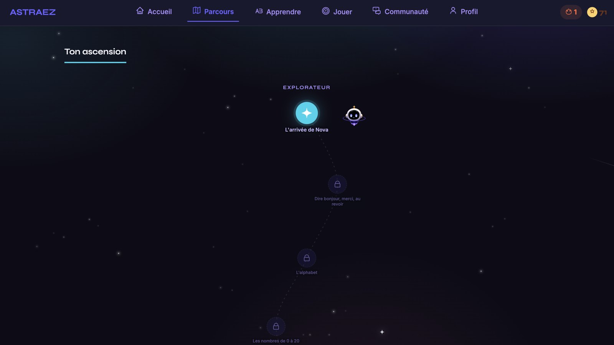

Context
Astraez is a web platform I created to help French people learn English. The project is in development, and I run it end to end, from product vision to build.
Why Astraez
I wanted a platform that makes people want to learn. Astraez is built on play and progression: learners move through a constellation-shaped path, guided by Nova, a small mascot, and learn English through games and challenges, without feeling like they're sitting through a lesson.
The vision
First, to give French schools a clear, engaging way to teach English online: structured for the classroom, simple for teachers and consistent from one lesson to the next. Later, the platform is meant to open up to companies, in a format still to be defined.
What I've designed
- A learning path shaped like a constellation, where each step unlocks the next.
- Short, practical lessons: greetings, saying thank you, the alphabet and numbers.
- A games area to review in a playful way.
- A motivation system: daily streaks, stars to earn and levels to reach.
- Nova, a mascot who guides learners throughout their path.
- A community area and a personal profile to follow progress.
- The full visual identity: name, logo and graphic universe.
Visuals

Outcome
Astraez is my most personal project. Running it alone is teaching me to manage a product end to end: defining what matters to the user, prioritising, designing, testing, then adjusting.
It's also direct training for events: thinking about the audience's experience first, organising a long project without an imposed framework, and staying on course over time.